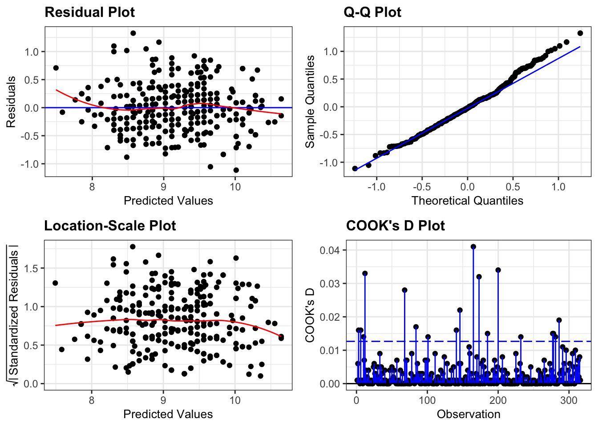

4 Linear models
4.1 Data
For this example, we’ll be using the several data sets about Darwin’s finches. They are part of a long-term genetic and phenotypic study on the evolution of several species of finches. The exact details are less important for now, but there are data on multiple species where several phenotypic characteristics were measured (see Figure 4.1).
4.2 Exploring data
It’s always a good idea to explore your data visually. Here we are focussing on the (potential) relationship between beak length (blength) and beak depth (bdepth).
Our data contains measurements from two years (year) and two species (species). If we plot beak depth against beak length, colour our data by species and look across the two time points (1975 and 2012), we get the following graph:
It seems that there is a potential linear relationship between beak depth and beak length. There are some differences between the two species and two time points with, what seems, more spread in the data in 2012. The data for both species also seem to be less separated than in 1975.
For the current purpose, we’ll focus on one group of data: those of Geospiza fortis in 1975.
4.3 Linear model
Let’s look at the G. fortis data more closely, assuming that the have a linear relationship. We can visualise that as follows:
If you recall from the Core statistics linear regression session, what we’re doing here is assuming that there is a linear relationship between the response variable (in this case bdepth) and predictor variable (here, blength).
We can get more information on this linear relationship by defining a linear model, which has the form of:
\[ Y = \beta_0 + \beta_1X \]
where \(Y\) is the response variable (the thing we’re interested in), \(X\) the predictor variable and \(\beta_0\) and \(\beta_1\) are model coefficients. More explicitly for our data, we get:
\[ beak\ depth = \beta_0 + \beta_1 \times beak\ length \]
But how do we find this model? The computer uses a method called least-squares regression. There are several steps involved in this.
4.3.1 Line of best fit
The computer tries to find the line of best fit. This is a linear line that best describes your data. We could draw a linear line through our cloud of data points in many ways, but the least-squares method converges to a single solution, where the sum of squared residual deviations is at its smallest.
To understand this a bit better, it’s helpful to realise that each data point consists of a fitted value (the beak depth predicted by the model at a given beak length), combined with the error. The error is the difference between the fitted value and the data point.
Let’s look at this for one of the observations, for example finch 473:
Obtaining the fitted value and error happens for each data point. All these residuals are then squared (to ensure that they are positive), and added together. This is the so-called sum-of-squares.
You can imagine that if you draw a line through the data that doesn’t fit the data all that well, the error associated with each data point increases. The sum-of-squares then also increases. Equally, the closer the data are to the line, the smaller the error. This results in a smaller sum-of-squares.
The linear line where the sum-of-squares is at its smallest, is called the line of best fit. This line acts as a model for our data.
For finch 473 we have the following values:
- the observed beak depth is 9.5 mm
- the observed beak length is 10.5 mm
- the fitted value is 9.11 mm
- the error is 0.39 mm
4.3.2 Linear regression
Once we have the line of best fit, we can perform a linear regression. What we’re doing with the regression, is asking:
Is the line of best fit a better predictor of our data than a horizontal line across the average value?
Visually, that looks like this:

What we’re actually testing is whether the slope (\(\beta_1\)) of the line of best fit is any different from zero.
To find the answer, we perform an ANOVA. This gives us a p-value of 1.68e-78.
Needless to say, this p-value is extremely small, and definitely smaller than any common significance threshold, such as \(p < 0.05\). This suggests that beak length is a statistically significant predictor of beak depth.
In this case the model has an intercept (\(\beta_0\)) of -0.34 and a slope (\(\beta_1\)) of 0.9. We can use this to write a simple linear equation, describing our data. Remember that this takes the form of:
\[ Y = \beta_0 + \beta_1X \]
which in our case is
\[ beak\ depth = \beta_0 + \beta_1 \times beak\ length \]
and gives us
\[ beak\ depth = -0.34 + 0.90 \times beak\ length \]
4.3.3 Assumptions
In example above we just got on with things once we suspected that there was a linear relationship between beak depth and beak length. However, for the linear regression to be valid, several assumptions need to be met. If any of those assumptions are violated, we can’t trust the results. The following four assumptions need to be met, with a 5th point being a case of good scientific practice:
- Data should be linear
- Residuals are normally distributed
- Equality of variance
- The residuals are independent
- (no influential points)
As we did many times during the Core statistics sessions, we mainly rely on diagnostic plots to check these assumptions. For this particular model they look as follows:

These plots look very good to me. For a recap on how to interpret these plots, see CS2: ANOVA.
Taken together, we can see the relationship between beak depth and beak length as a linear one, described by a (linear) model that has a predicted value for each data point, and an associated error.